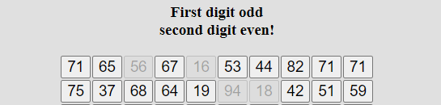

Im nachfolgenden Test sehen Sie jeweils 100 Zahlen.
Ihre Aufgabe besteht darin, so schnell wie möglich, aber dennoch
korrekt
diejenigen Zahlen (mit linker Maustaste) nacheinander
anzuklicken,
deren erste Ziffer ungerade und deren zweite Ziffer gerade
ist
( z.B. 16, 74, 52 usw.).
Beispiel
Sie sehen unten einen Ausschnitt aus
den ersten 20 Zahlen

Die hier markierten Zahlen sind richtig.
Sie sollten nur einmal die Zahlen zügig ohne Rücksprung durchgehen
und
so schnell wie möglich, aber dennoch korrekt antworten.
Am Ende
sofort den Button "Bearbeitung bestätigen" anklicken!
Es folgen dann
noch ein Durchgang, den Sie genauso bearbeiten sollten.
Zunächst ein Probebeispiel mit 16 Zahlen